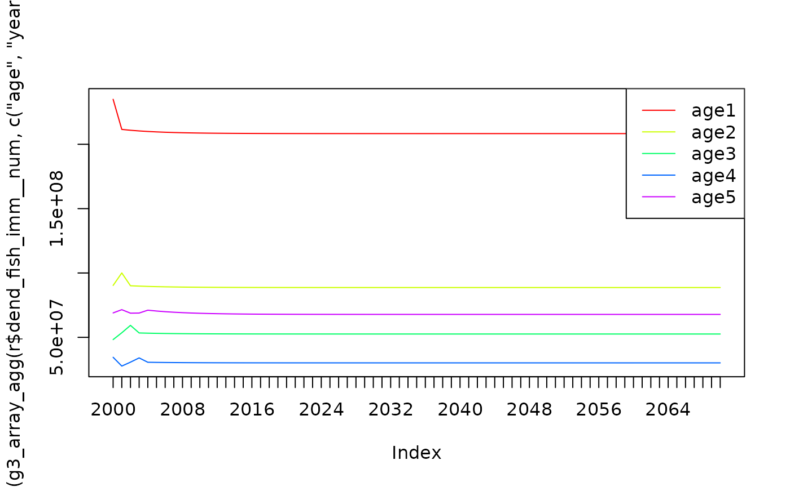
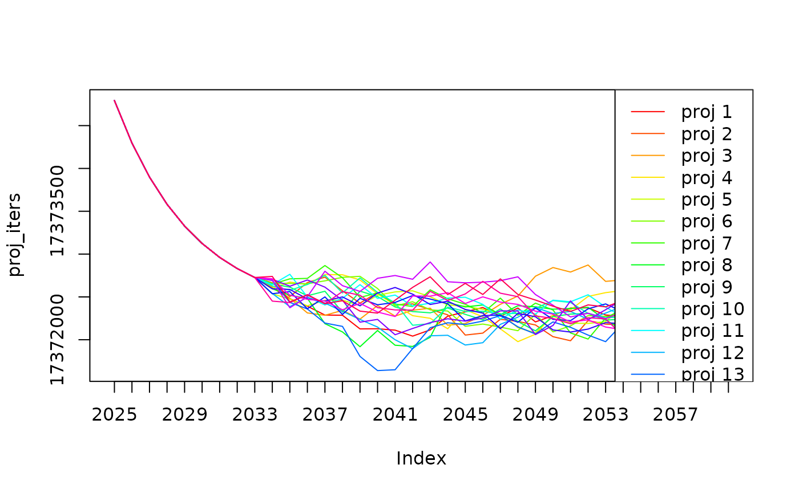

vignettes/articles/random-effect-recruitment.Rmd
random-effect-recruitment.RmdRandom effects in TMB run an inner optimisation problem for each run
of the model being optimised. To include random effects in a gadget3
model, you use the g3_param_project() series of
functions.
g3_param_project() works very much like
g3_parameterized(by_year = TRUE), introducing a time-vector
of parameters into a model. However, it also adds a likelihood component
describing a relationship between each element of the time-vector, which
is then used to pick values for projections.
For instance using
g3_param_project("M", g3_param_project_dnorm()) as the
definition of “M” in g3a_naturalmortality() will result in
the following parameters:
st <- g3_stock(c(species = "fish", "imm"), 1:10 * 10)
actions <- list(
g3a_time(2000, 2003, c(6,6)),
g3a_naturalmortality(st, g3a_naturalmortality_exp(
g3_param_project("M", g3_param_project_dnorm()) )))
model_cpp <- g3_to_tmb(actions)
attr(model_cpp, "parameter_template")[,c("switch", "random", "source")]## switch random source
## retro_years retro_years FALSE g3a_time
## proj_dnorm_M_weight proj_dnorm_M_weight FALSE g3_param_project
## M.proj.dnorm.mean M.proj.dnorm.mean FALSE g3_param_project_dnorm
## M.proj.dnorm.stddev M.proj.dnorm.stddev FALSE g3_param_project_dnorm
## M.2000.1 M.2000.1 TRUE g3_param_project
## M.2001.1 M.2001.1 TRUE g3_param_project
## M.2002.1 M.2002.1 TRUE g3_param_project
## M.2003.1 M.2003.1 TRUE g3_param_project
## M.2000.2 M.2000.2 TRUE g3_param_project
## M.2001.2 M.2001.2 TRUE g3_param_project
## M.2002.2 M.2002.2 TRUE g3_param_project
## M.2003.2 M.2003.2 TRUE g3_param_project
## project_years project_years FALSE g3a_timeM.(year).(step): The time-vector of M values to use in
historical timestepsM.proj.dnorm.mean / M.proj.dnorm.stddev:
The parameters of the normal distribution we expect M to
meet. These will…
M when
projectingproj_dnorm_M_weight: The weighting of the likelihood
component used aboveFor a more complete example, we create a single-stock model, with a
g3l_abundancedistribution() likelihood component enforcing constant
abundance. We define the renewal rate using
g3_param_project() with
g3_param_project_logar1():
stocks <- list(
imm = g3_stock(c(species = "fish", "imm"), 1:10 * 10) |> g3s_age(1, 5) )
## Generate some abundnace data for ages 4 & 5, the stock should be stable, however the data is noisy
old.seed <- mget(c(".Random.seed"), envir = globalenv(), ifnotfound = list(NULL))[[1]]
set.seed(42)
dist_age4 <- expand.grid(year = 2000:2030, step = 1, age = 4, number = NA)
dist_age4$number <- rnorm(nrow(dist_age4), 1.75e7, 2e6)
dist_age5 <- expand.grid(year = 2000:2030, step = 1, age = 5, number = NA)
dist_age5$number <- rnorm(nrow(dist_age5), 3.75e7, 2e6)
set.seed(old.seed)
## Single stock model, using our generated data as an abundance index
actions <- list(
g3a_time(2000, 2030, step_lengths = c(6,6)),
g3a_age(stocks$imm),
g3a_initialconditions_normalcv(stocks$imm),
g3a_naturalmortality(stocks$imm),
g3a_growmature(stocks$imm, g3a_grow_impl_bbinom(maxlengthgroupgrowth = 4L)),
g3a_renewal_normalparam(
stocks$imm,
factor_f = g3_param_project(
"rec",
g3_param_project_logar1(),
scale = "scalar",
by_stock = stocks,
by_step = FALSE ),
run_step = 1 ),
g3l_abundancedistribution(
"dist_older",
rbind(dist_age4, dist_age5),
stocks = stocks,
# NB: Fix alpha/beta, abundance should match given values absolutely
function_f = g3l_distribution_surveyindices_log(alpha = 0, beta = 1),
report = TRUE,
nll_breakdown = TRUE),
NULL )
full_actions <- c(actions, list(
g3a_report_detail(actions),
g3a_report_history(actions, "__num$|__wgt$", out_prefix="dend_"), # NB: Late reporting
g3l_bounds_penalty(actions),
NULL ))
model_cpp <- g3_to_tmb(full_actions)Next, we define some initial parameters to use.
Note in particular that we are optimising the parameters for the distribution governing the time-vector. The aim here is roughly that the outer optimisation will decide on values here that meet the overall model, the inner optimistation will choose values that meet the distribution.
## Define baseline parameters / fixed-effects
attr(model_cpp, "parameter_template") |>
g3_init_val("*.init.scalar", 10, optimise = FALSE) |>
g3_init_val("*.init.#", 10, lower = 1e1, upper = 1e8) |>
g3_init_val("*.M.#", 0.5, lower = 0.1, upper = 1) |>
g3_init_val("init.F", 0.5, lower = 0.1, upper = 10) |>
g3_init_val("*_imm.Linf", 144.645) |>
g3_init_val("*.K", 0.3, lower = 0.04, upper = 1.2) |>
# NB: We don't optimise here since the model defines no length/weight structure, only counts
g3_init_val("*.t0", -0.8, optimise = FALSE) |>
g3_init_val("*.walpha", 0.01, optimise = FALSE) |>
g3_init_val("*.wbeta", 3, optimise = FALSE) |>
g3_init_val("*.rec.scalar", 10, optimise = FALSE) |>
g3_init_val("fish_imm.rec.proj.logar1.level", value = 2e3, lower = 1e1, upper = 5e5) |>
g3_init_val("fish_imm.rec.proj.logar1.stddev", value = 1, lower = 1e-15, upper = 1e4) |>
# NB: Relative weight is important, but g3_iterative isn't handling this for you yet
g3_init_val("proj_logar1_fish_imm_weight.proj_logar1_rec_weight", 1e0) |>
identity() -> params.inTo give something to compare against, optimise first with recruitment as a fixed-effect, which should still work, as the score for fixed & random effects is combined:
params.in |>
# NB: level = init value, to be internally consistent
g3_init_val("*.rec.#", value = 2e3, lower = 1e1, upper = 1e6, random = FALSE) |>
identity() -> params.fixed
obj.fix <- g3_tmb_adfun(model_cpp, params.fixed, silent = TRUE)## using C++ compiler: 'g++ (Ubuntu 13.3.0-6ubuntu2~24.04) 13.3.0'
params.fixout <- gadgetutils::g3_optim(obj.fix, params.fixed, control = list(maxit = 2000, trace = 0))
stopifnot(attr(params.fixout, "summary")$convergence)Next, optimise the same model but using random effects for recruitment:
params.in |>
# NB: By setting random = TRUE, any previous bounds will be cleared
g3_init_val("*.rec.#", value = 2e3, random = TRUE) |>
identity() -> params.rnd
obj.rnd <- g3_tmb_adfun(model_cpp, params.rnd, inner.control = list(trace = 0, maxit = 1000, tol = 1e-3), silent = TRUE)
params.rndout <- gadgetutils::g3_optim(obj.rnd, params.rnd, trace = 0)## initial value 406.457084
## iter 10 value 56.373102
## iter 20 value 10.773300
## iter 30 value 1.464862
## iter 40 value 0.884632
## iter 50 value 0.877144
## iter 60 value 0.867337
## iter 70 value 0.866454
## iter 80 value 0.866081
## iter 80 value 0.866081
## iter 90 value 0.866058
## iter 90 value 0.866058
## iter 100 value 0.866058
## iter 100 value 0.866072
## iter 100 value 0.866072
## final value 0.866058
## convergedBoth models have ended up with similar solutions:
## [,1] [,2]
## retro_years 0 0
## fish_imm.Linf 144.645 144.645
## fish_imm.K 0.3 0.3
## fish_imm.t0 -0.8 -0.8
## fish_imm.lencv 0.1 0.1
## fish_imm.init.scalar 10 10
## fish_imm.init.1 631.3684 632.0496
## fish_imm.init.2 9778.214 5393.093
## fish_imm.init.3 1135.981 6219.276
## fish_imm.init.4 8305.526 249269.3
## fish_imm.init.5 6539.932 47527.17
## fish_imm.M.1 0.9438641 0.7858728
## fish_imm.M.2 0.9980344 0.4355151
## fish_imm.M.3 0.2635327 0.2977851
## fish_imm.M.4 0.6802546 0.9999862
## fish_imm.M.5 0.3469061 0.2851547
## init.F 0.1791403 0.6563645
## recage 0 0
## fish_imm.walpha 0.01 0.01
## fish_imm.wbeta 3 3
## proj_logar1_fish_imm_weight.proj_logar1_rec_weight 1 1
## fish_imm.rec.proj.logar1.phi 0.8 0.8
## fish_imm.rec.proj.logar1.stddev 1.342989e-09 1.158661e-06
## fish_imm.rec.proj.logar1.level 1365.874 882.9542
## fish_imm.rec.2000 1397.306 903.6358
## fish_imm.rec.2001 1390.963 899.4611
## fish_imm.rec.2002 1385.908 896.1352
## fish_imm.rec.2003 1381.878 893.4833
## fish_imm.rec.2004 1378.662 891.3675
## fish_imm.rec.2005 1376.095 889.6785
## fish_imm.rec.2006 1374.045 888.3295
## fish_imm.rec.2007 1372.407 887.2519
## fish_imm.rec.2008 1371.098 886.3907
## fish_imm.rec.2009 1370.052 885.7023
## fish_imm.rec.2010 1369.215 885.152
## fish_imm.rec.2011 1368.546 884.712
## fish_imm.rec.2012 1368.012 884.3602
## fish_imm.rec.2013 1367.584 884.0788
## fish_imm.rec.2014 1367.242 883.8538
## fish_imm.rec.2015 1366.968 883.6738
## fish_imm.rec.2016 1366.749 883.5298
## fish_imm.rec.2017 1366.574 883.4147
## fish_imm.rec.2018 1366.434 883.3226
## fish_imm.rec.2019 1366.322 883.2489
## fish_imm.rec.2020 1366.233 883.1899
## fish_imm.rec.2021 1366.161 883.1428
## fish_imm.rec.2022 1366.104 883.1051
## fish_imm.rec.2023 1366.058 883.0749
## fish_imm.rec.2024 1366.021 883.0508
## fish_imm.rec.2025 1365.992 883.0314
## fish_imm.rec.2026 1365.968 883.016
## fish_imm.rec.2027 1365.95 883.0036
## fish_imm.rec.2028 1365.935 882.9938
## fish_imm.rec.2029 1365.923 882.9858
## fish_imm.rec.2030 1365.913 882.9795
## report_detail 1 1
## fish_imm.bbin 0 0
## fish_imm.rec.scalar 10 10
## fish_imm.rec.sd 10 10
## adist_surveyindices_log_dist_older_weight 1 1
## project_years 0 0Given a parameterised model, projections can be performed by varying
the project_years parameter. Whilst you can use the
objective function above for this, it’s simpler to do so with a function
designed for single runs, produced either by g3_tmb_fn or
g3_tmb_r. We will use the latter here:
fn <- g3_tmb_fn(model_cpp)The resulting fn function then accepts parameter tables,
which we can modify to project into the future. Our model settles at the
point we expect:
abund <- g3_array_agg(
fn(params.rndout |> g3_init_val("project_years", 40))$dend_fish_imm__num,
c('age', 'year'),
age = c(4, 5),
year = 2040:2060,
step = 1)
print(signif(rowMeans(abund), 3))## age4 age5
## 17400000 36800000Plot abundance for years 4 & 5, with 40 years projection, using level/stddev chosen by optimiser:
r <- fn(params.rndout |> g3_init_val("project_years", 40))
g3_array_plot(t(g3_array_agg(r$dend_fish_imm__num, c('age', 'year'))))
Successive calls will choose different values for the projections. Plot 20 iterations of projecting 40 years:
proj_iters <- do.call(cbind, lapply(1:20, function (i) {
r <- fn(params.rndout |> g3_init_val("project_years", 40))
# Generate report for age 4 abundance
proj <- t(g3_array_agg(
r$dend_fish_imm__num,
c('age', 'year'),
year = 2025:2060, # NB: Skip the first years when the model is settling
age = 4,
step = 1 ))
dimnames(proj)[[2]] <- paste0("proj ", i)
return(proj)
}))
g3_array_plot(proj_iters)